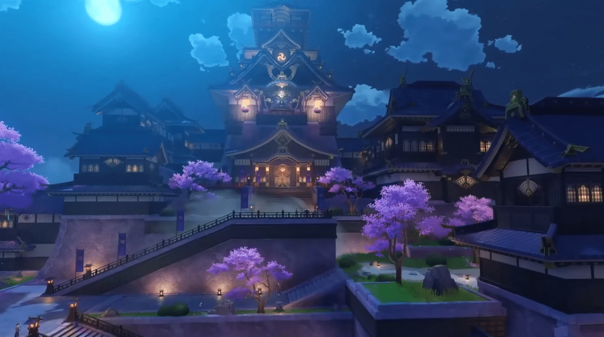

Genshin impact

Genshin Impact takes place in the fantasy world of Teyvat, home to seven nations, each of which is tied to a different element and ruled by a different god. The story follows The Traveler, an interstellar adventurer who, at the start of the game, is separated from their twin sibling after the two land in Teyvat. Thereafter, the Traveler journeys across the nations of Teyvat in search of the lost sibling, accompanied by their guide, Paimon. Along the way, the two befriend myriad individuals, become involved in the affairs of its nations, and begin to unravel the mysteries of the land.
- This is a definition term
- This is the definition description
- Another definition term
- Another definition description
Mondstadt

Nestled amidst the majestic mountains, Mondstadt is a city in the clouds, where the wind whispers tales of freedom. Home to the Knights of Favonius, this region boasts breathtaking architecture that seems to touch the sky. Wind currents carry you effortlessly through the city, revealing secrets hidden among the clouds. Mondstadt, with its lively streets and soaring towers, is a haven for those who seek the thrill of the wind and the call of adventure.
Liyue

Liyue, a land of prosperity and trade, unfolds beneath towering cliffs and vast terraced fields. Here, jade peaks touch the heavens, and the architecture is a testament to the harmony between nature and stone. In this bustling harbor city, commerce and culture intertwine seamlessly. From the bustling markets of Chasm to the tranquil gardens of Wangshu Inn, Liyue's landscapes are as diverse as the contracts etched in stone, binding the fate of the people to the prosperity of this stone-carved haven.
Inazuma

Inazuma, a realm of perpetual thunderstorms and vibrant neon lights, is ruled by the Electro Archon, the almighty Shogun. Skyscrapers of light pierce the night sky as the city hums with the energy of the Electro element. High-tech facilities and ancient shrines coexist in this electrifying domain, where the Shogun's rule is absolute. Amidst the neon-lit streets and hidden enclaves, the people of Inazuma navigate the delicate balance between tradition and progress, creating a dazzling tapestry of modernity in the heart of electric storms.
Gameplay
Genshin Impact is an open-world, action role-playing game that allows the player to control one of four interchangeable characters in a party. Switching between characters can be done quickly during combat, allowing the player to use several different combinations of skills and attacks. Characters may have their abilities enhanced in various ways, mainly through directly leveling them up and improving the artifacts and weapons that a character can equip. In addition to exploration, the player can attempt various challenges for rewards. Scattered across Teyvat are bosses and challenges that reward highly valuable resources, but claiming them uses up a currency called Original Resin, which slowly regenerates over time. Completing these challenges grants the player progress towards increasing their Adventure Rank, which in turn unlocks new quests, challenges, and raises the World Level. The World Level is a measure of how strong the enemies within the world are and the rarity of rewards that defeating them gives.
The player can control their character and perform actions such as running, climbing, swimming, and gliding, all limited by stamina. Some characters possess abilities that can alter the environment, such as freezing water to create an ice path that can aid the player in traversing terrain. Many teleportation points exist throughout the world that players can warp to as a form of fast travel; among these are landmarks known as Statues of The Seven that can heal and revive characters, and provide benefits such as increasing player stamina. Items such as food and ore may be procured from the open world, while enemies and treasure chests drop other types of resources that may be used in enhancing a character's strength. Players can obtain food from hunting animals, gathering fruit and vegetables, or purchasing them from in-game shops. Furthermore, there are special battle instances called "Domains" that reward materials which increase character and weapon strength. Meals cooked from ingredients gathered in the overworld may also provide desirable effects, such as regenerating characters' health or boosting various stats. Players can also procure ore that can be refined and then used to create weapons or enhance their strength.
A multiplayer mode is available in the form of co-op. Up to four players can play together in the overworld and join Domains. Player matching can either be done by requesting to connect with another player, or through an automatic search. The game features cross-platform play, so players on any platform can play with each other.
By completing certain quests or by participating in select limited-time events, the player can unlock additional playable characters. Most characters, however, are obtained through the character banners of the game's gacha system, called "Wishes". Several premium in-game currencies, obtainable through in-app purchases or as gameplay rewards, are required to pull on the game's banners. A pity system guarantees that the player will receive rare items after a set number of pulls.